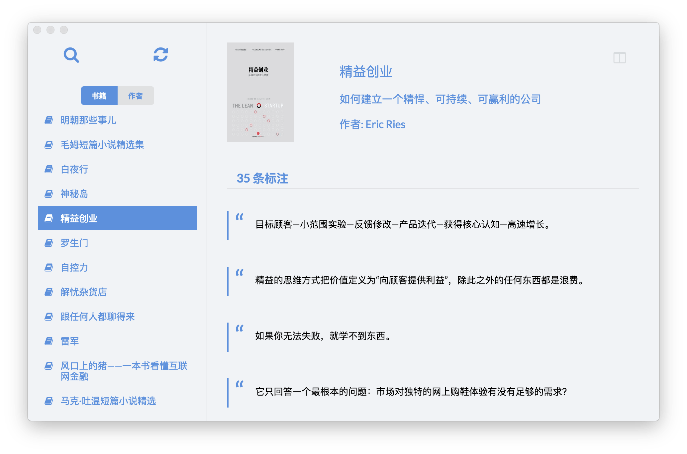

1. 首次打开 Knotes 时，会提示需要连接上 Kindle 进行「My Clippings.txt」文件的同步。当我们将 Kindle 与电脑连接，点击同步按钮，Knotes 就可以自动读取该文件，对标注进行自动整理。

2. 同步成功后，我们可以按照「书籍名称」、「作者」归类。查看标注详情时，可以依照「标注时间」或者「书籍中位置」来对标注进行排序。
3. Knotes 还提供了「标注阅读模式」，收起左边栏，让我们可以更加专注于标注本身。
4. Knotes 支持关键词全文检索，包括书名、作者、标注内容。在实际操作中发现，如果搜索关键词在标题中出现的话，就不会对标注内容进行搜索。